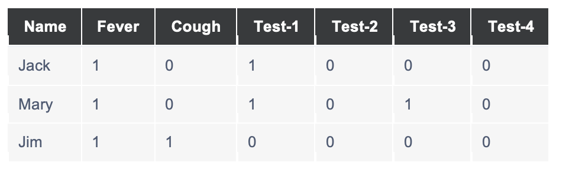

Unit 1
Unit 1 dealt with an introduction to machine learning, and the theoretical aspect of what the course entails.
The first collaborative discussion was assigned to speak about the Fourth Industrial Revolution or Industry 4.0" which is based on the incorporation of technology into industrial processes in order to improve efficiencies.
We were also divided into groups in order to work on our group project which deals with an AirBnB dataset for New York City and requires a report to be presented to the management in order to make better informed business decisions.
Unit 2
Exploratory Data Analysis (EDA) was introduced in the second unit, and the purpose of EDA is to spot any types of patterns in the dataset. The main items of the data are identified and interpreted. The data should ideally be cleaned, ie, removal of duplicates, removal of rows which have incomplete information, and grouping of relevant properties. This will be useful for the group assignment due to the number of items which contain similar characterisitics in the dataset.
Unit 3
- Covariance Pearson Correlation
- Linear Regression
- Multiple Linear Regression
- Polynomial Regression
Pearson’s correlation is the deviation of the two values (x and y) which are multiplied, summed and divided by the total number of pairs of values minus 1 (n-1). This helps to calculate the difference between two variables and calculate whether the correlation is high or not, a score of 1 or near 1 indicates that there is a strong relationship between the 2 variables, while a score of -1 or near -1 indicates the absence or weak relationship between the 2 variables. From the code provided and following manipulation, it was found that reducing the number of points on the graph will reduce the accuracy of the mean for both data1 and data2 as there would be less values to be used to calculate the mean.
Myfunc puts the calculations in the form of a straight line y =mx+c. The prediction uses the slope calculated, in this case the value of m to find the value of y. This is accomplished by using the stats.linregress which performs a linear least squares regression calculation on two arrays of values.
This technique uses variables to predict the outcome of a response variable. In this scenario, the code provided utilizes the weight of the vehicle and the volume of the displacement in order to predict the CO2 output level. The dependent variables are the weight and volume while the dependent variable is CO2.
Polynomial regression is a form of regression analysis that allows for more complex patters or relationships to be made utilizing independent variables and also for predicting values. In this scenario for the code provided, contains two arrays for x and y values, where each value is mapped to create a curved line, with the x value indicating the time the vehicle passed and y the speed recorded at which the vehicle passed the booth. The value of r^2 indicates whether there is a relation and, in this scenario, a value of 0.94 indicates that there is a strong relationship in the model. This means that predictions can be made utilizing the regression model.
Legal, Social, Ethical & Professional Issues that Machine Learning Professionals Will Encounter
- Legal
- Social
- Ethical
- Professional
There are volumes of data available for individuals to utilize and learn from, however this does not mean that they can be used as a repository to train a data model without the publisher or author’s permission, especially those of copyrighted or protected data. There can be serious consequences associated with that from a legal background, ranging from jail time, to monetary fines, or even revoking of rights for data usage. Numerous websites and companies have incorporated a feature on their websites to prevent web scrapers from being able to collect data.
The social consequences of gathering data stem from where the data is collected, in some instances individuals are unaware that they are being recorded, and what the purpose of these recordings are. There are numerous cameras recording individuals however majority are for security reasons, however if individuals are having their likeness recorded to be used in a data model, there would be objections throughout. It is imperative that individuals are aware and give permission for this to occur.
There are many ethical considerations to be had when dealing with machine learning, many of which stem from bias and fairness. Unfortunately the data which a model may be trained upon may have inherent bias that was subconsciously achieved. In instances this like this, the model will not function correctly and it is imperative for the model to have this bias mitigated, by using diverse datasets when training is being done. In addition to diversity in the datasets, ongoing adjustments and monitoring should be the standard to overcome these biases, such as in facial recognition software where darker skin tones have a direct relation to higher error rates.
Professional issues which occur from the use of machine learning stem directly from the issue of individuals utilizing technology to accomplish all of, or majority of their work. In the instance of education and scholars, individuals can use machine learning, not to calculate results, but to write entire papers and submitting it as their own, unfortunately this relates to the first issue discussed, which constitutes the legal right to utilize the data, and the ethical right to use another individual’s data and pass it off as their own, otherwise known as plagiarism.
Machine Learning Algorithms
There are numerous machine learning algorithms which utilize various methods of creating models, including deep learning, decision trees or suppor vector machines. They are defined by
- The use of neural networks on a dataset is referred to as deep learning and is popular for image recognition, natural language processing and speech recognition. This type of network utilizes layers to split the data in order to train the model and as a result output accurate output. The datasets which are utilized in neural networks include image datasets and audio datasets.
- The decision tree approach is a supervised learning approach which utilizes flow charts created by the computer to model the dataset on ad predict values based on the probabilities of each branch occurring from a past outcome, indicating that there must be some level of history for this to be based on. This is primarily utilized for classification and regression tasks. The datasets which are utilized for this type of machine learning would be those of stock trading or types of financial transactions.
- The support vector machine approach utilized supervised learning in order to classify binary groups or solve regression and outlier tasks. It is primarily good for text classification, image and handwriting classification, spam detection and gene expression analysis to give a few examples. Their effectiveness stems from the finding the line that separates datapoints to create the classification groups.
Unit 4
This unit dealt with the introduction of regression utilizing Scikit Learn which is an open source python package. It is used for creating and interpreting models. The first step of which is to preprocess the data to ensure that the data will not have any outliers which could result in skewed values occurring. Following this, analysis is achieved by plotting points on a graph
Unit 5 & 6
Prior to any calculations being done, positive results were assigned the binary value of 1, and negative values were assigned the value of 0. The following table shows the transfigured information from the test results of Jack, Mary and Jim:
The Jaccard coefficients for the pairs are as follows:
Jack and Mary both have Fever, and positive results for Tet-1 while Mary tested positive for Test-3 resulting in a numerator of 2, and a denominator of 3. This gives 2/3 or 0.66’
Jack and Jim both have fever, while Jack tests positive for Test-1 and Jim has a cough resulting in a numerator of 1, and a denominator of 3. This gives 1/3 or 0.33.
Jim and Mary both have a fever, however Jim has a cough while Mary tests positive for Test-1 and Test-3 resulting in a numerator of 1 and a denominator of 4. This gives 1/4 or 0.25.
The clustering videos that were provided gave an insight into how the algorithm works visually which was very insightful. It provided an excellent example of how the model works to cluster groups of data while also showing how the centroids are adjusted to create the clusters of the groups.
Unit 7
An Artifical Nueral Network takes inspiration from Biology due to the way data is processed and adaptationg of the data model following training. It is regarded as an important contributor to Industry 4.0 as it utilizes interconnected nodes on different layers to ensure that the data model can process the data and make an informed decision. The introduction of this is important to the upcoming assignment as an artificial neural network has to be designed.
Unit 8
Mayo 2017 deals with an optimization algorithm, specifically, the gradient descent which is utilized for increasing the data model’s efficiency by increasing accuracy while reducing errors. The author goes on to say that most algorithms are based of linear regression algorithms, and gradient descent works well for supervised learning. The gradient descent algorithm states that it will run until “convergence” meaning that it will continue until the values become so close that they are negligible, with this being achieved it will lower the cost function of the data model, thus increasing efficiency, this term is referred to as the global optimization factor. Its purpose is to minimize the cost function of the data model to ensure efficiency. As a result of this convergence indicating efficiency, the learning rate plays an important role as a learning rate that is too high, will result in an overshooting of the cost function minima, or potentially diverge (which is the opposite of what we are trying to achieve), while too low and it becomes inefficient by taking a longer period of time for convergence to occur.
The gradient descent exercise when run with a learning rate of 0.01 and 0.03 resulted in costs of 0.480 and 0.125 respectively at 100 iterations. Conversely, running the same rate at 0.001 and 0.1 resulted in much greater costs such as 2.6 and 5.9 respectively after the 100th iteration.
However, when reducing the number of iterations with learning rates of 0.01, 0.03, 0.001 and 0.1 resulted in costs of 1.57, 0.78, 58.16 and 24209.9 respectively, thus indicating smaller iterations will result in a significantly higher cost due to the lack of times the dataset is processed, however going for too many iterations could result in overfitting, unfortunately.
Unit 9
The introduction of a convolutional neural network was accomplished, and this is a specialized artificial neural network which has a primary focus on object recognition. We were introduced to the CIFAR 10 dataset, and how a CNN works buy dividing the images into pixels, and adding layers to train the data model to identify images from a dataset. This was quite interesting to see how object recognition occurs, however it was daunting as well due to the incorrect recognition of simple items, especially when it is being used for identifying felons. It was definitely an eye opener to some of the ethical considerations of technology which is ever evolving at an exponential rate.
Unit 10
There are many ethical and social issues associated with machine learning when it comes to identifying individuals, majority of which stem from the source of the data to train the model for identifying individuals. There is a large issue associated with the capture of individuals likeness without their permission for training, and identifying them throughout the world. Individuals are never far away from a camera, and as a result of this their likeness is captured at minimum 100 times a day, depending on the advancement of technology in the country. An example of this would be passengers at a train station are recorded numerous times, from the ticketing booth, to their train stop, the boarding and disembarking of the train and eventual the departure of the station. These are examples of times where individuals do not think to ask the question, “is my likeness going to be utilized for training these models?”
Unfortunately, this raises an ethical consideration, of which many people do not realize, the fine print on purchasing a ticket giving the company permission to record the individuals, and utilize it as they see fit. This is very similar to the software license agreement which many people have blindly accepted in the past, unsure as to what they are accepting. Furthermore, there is a large discrepancy when comparing the color of skin tones when attempting to identify persons as there is a higher risk of error with darker skin tones, than lighter skin tones due to the limited dataset which may have been utilized to train the model, resulting in numerous wrongful incarcerations occurring, worldwide.
The use of facial recognition and machine learning is something which is still new and it is still in development, however the consistent use of undertrained programs will continue to result in the minorities being affected due to the limited training sets available, however, it will also be difficult for individuals who already feel targeted to willingly succumb to submitting their likeness to train a model, which they already believe is targeting them.
Simple PerceptronThe simple perceptron is a neural network in its simplest form which can be utilized for pattern classification and information storage. It utilizes relative weights, an activation function and a bias to determine output based on the activation value. In this scenario the inputs are age, and the amount of work experience weighted at 0.7 and 0.1 respectively and the example is set at age 45 with 25 years of work experience, this equates to the summation of 34, and gives a probability of >1 (in this case 34) indicating that the sum function is greater than 1, which means the neuron is activated allowing for the individual to be passed. The usefulness of a perceptron comes from the binary results it produces allowing for simple classification into 2 categories.
Perceptron and OperatorThe perceptron is another building block in neural networks and works by manipulating the logic and performing operations on the input. The training method is an iterative one (a for loop, until a condition is met) and its weights are adjusted after each iteration based on the predicted error, until this is reduced to zero. The learning rate variable determines how quickly the weights are updated, a higher rate means the model will update faster and a lower rate means the model will update slower. Neither one of these situations are ideal, and a middle rate is ideal, as a model trained too quickly will have its optimal solution surpassed, which results in poor performance on new data, and too slowly, will have the same effect, but due to the model not being trained enough.
Multi Layer PerceptronThe multi layer perceptron is an artificial neural network which consist of interconnected neurons organized in layers, and each neuron in the previous layer is connected to all the neurons in the current layer. These layers are the values associated with the weights which are used to train the model. The ideal use for this is for classification of images and regression, due to the complex relationship learning ability the models can be trained for. The model is trained utilizing the method of back propagation which corrects for errors when training the model. The key terms in the use of multi layer perceptron are:
- Epoch – Number of times the training dataset is processed. Increasing this allows for better performance, however it can result in the model being unable to differentiate new data.
- Learning Rate – Rate at which the weights are updated however a rate that is too high can cause overfitting of data.
- Weights – the weighting of the output and input layer will affect how the neural network performs
The model performance measurement file was manipulated with different variables to see the effect on the AUC and R2 error, however these must first be defined.
The AUC (Area Under Curve) score is calculated by means of plotting a graph and calculating the area under said curve and it represents the probability of how well the model can identify between positive and negative cases.
R2 (R squared) error is defined as a regression metric used to represent the error, which relates to the model’s performance. There is a direct relation to the value of the R2 error when the number of independent variables increase.
It was noted that the following variables/parameters were manipulated and observed to have had an impact on the AUC and R2 values:
- The learning rates affect both due to the speed at which the model is updating the weighting following data processing of the dataset.
- The type of model utilized, is important because different datasets would have regression models ideally suited; increasing efficiency of the training and reducing errors.
Unit 11
The most important aspect of machine learning is the selection of a data model as this has a direct bearing on performance based on both training and new data to be processed. Unit 11 focussed on this and stressed on the importance of choosing the right model based on the dataset, while also introducing the balance of bias and variance for the data model. In order to create a model which will excel, utilization of different datasets for training, manipulating a single model, and using a combination of models should be implemented.
Unit 12
The end of the course came full circle with Unit 12 revisiting Industry 4.0 which was the first collaborative discussion completed. The evolution of the world is the only constant and with the introduction of faster, more efficient technology, there will only be more machine learning and artificial intelligence utilized across numerous industries. Important to note is the job market worry as there have already been replacements of man by machine in many factories worldwide. Unfortunately for each positive, there is a negative, for example machines are replaceable, humans are not, meaning that if a machine is damaged during routine work, it can be repaired whereas a human cannot (Cynically speaking that is). It is important to note however that there should be continuous monitoring of machinery during these conditions as machines while efficient are not always perfect.
Due to my professional background in aviation, I have gone for a prediction model; logistic regression, based on linear regression due to the fact that majority of aircraft parts are stress tested over time periods to ensure that they can withstand the enormous strain that is placed on them at an almost daily basis. The thought process behind this is due to the inspection of the part, and if required corrective maintenance required. Currently items are tracked either by calendar or flight hour time and these are based off of predictions by the original equipment manufacturer or if they have received feedback from customers. Some items also have sensors and gyroscopes which record vibrations and when connected to the internet can be downloaded, further enhancing efficiency via the Internet of Things solution.
In addition to this, it can also predict the preventative maintenance of parts in an attempt to assist the maintenance department produce airworthy aircraft for the customer and client.
Reflective
Throughout this machine learning course it has been quite difficult to make time to sit and read as much as I have in my previous courses due to projects coming due in my professional life and my difficulty with understanding how to code. The use of numerous websites and the seminars via Google Colab notebooks came in very helpful and the knowledge which was garnered has already been put into practice in my professional life. I look forward to seeing how well I can implement and improve on items in my professional life.
While this course opened my eyes to the wonders of Artificial Intelligence and pulled the curtain back on how it is achieved, I am personally still not convinced to use A.I. in my personal life as there are too many considerations, and lack of understanding on my part to be truly comfortable with utilization of a very useful, but concerning evolution in technology.